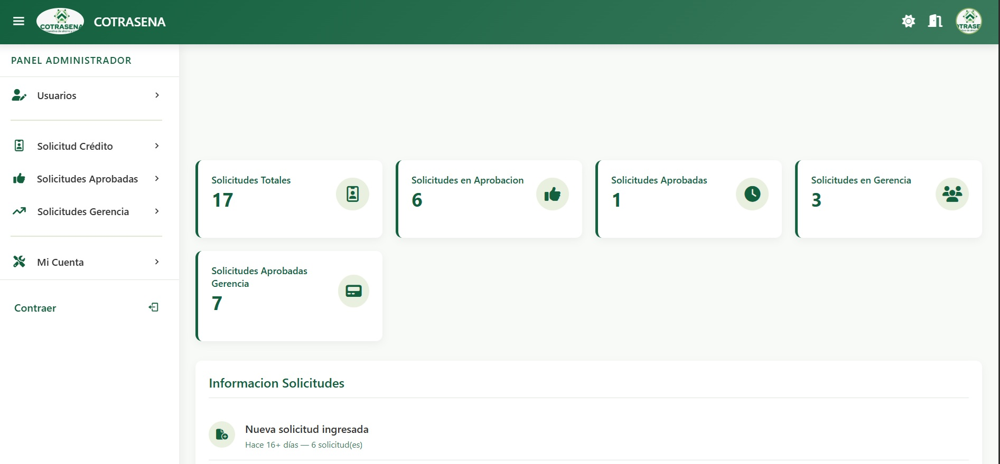
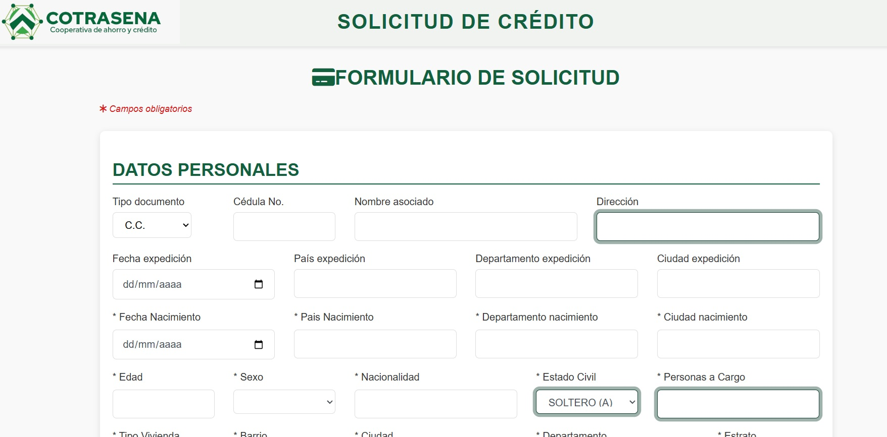
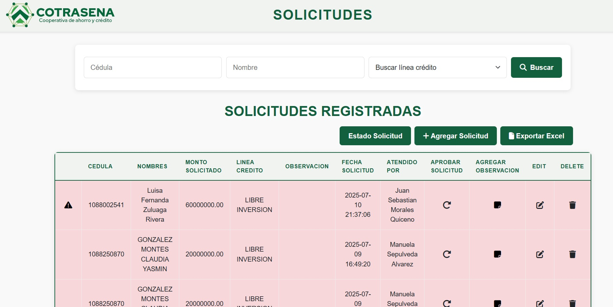
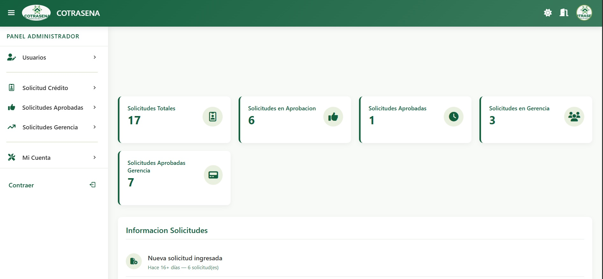
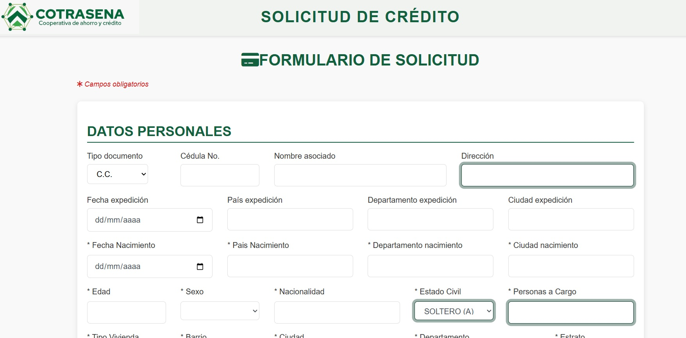
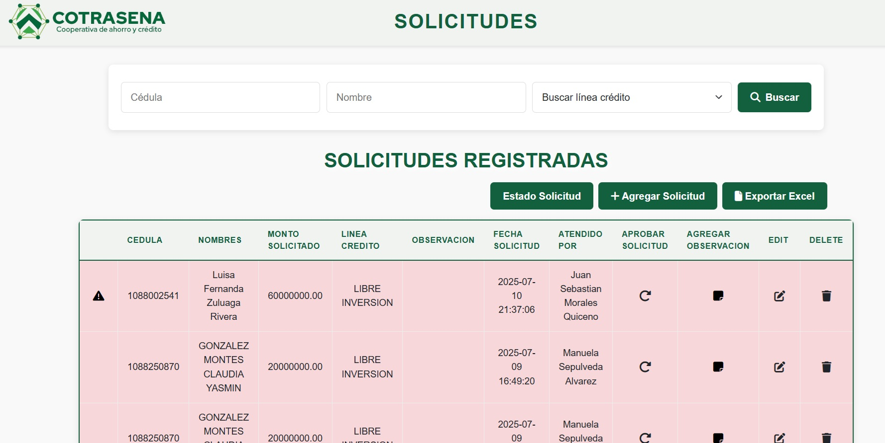
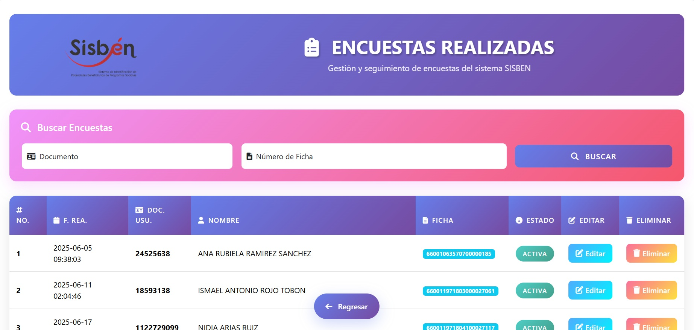
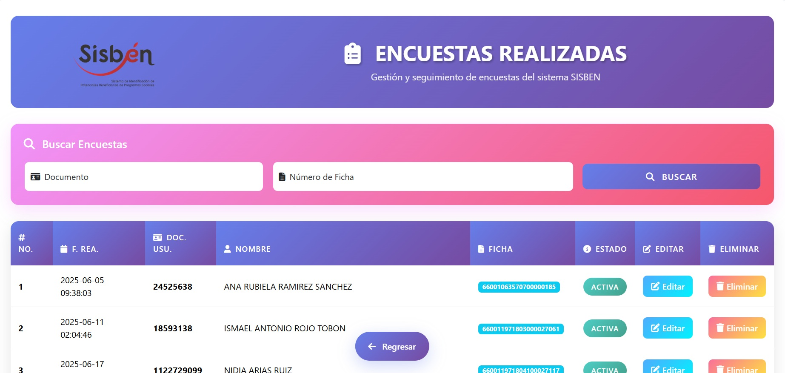
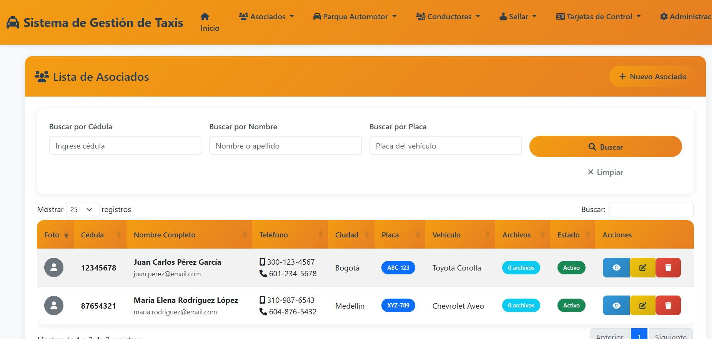
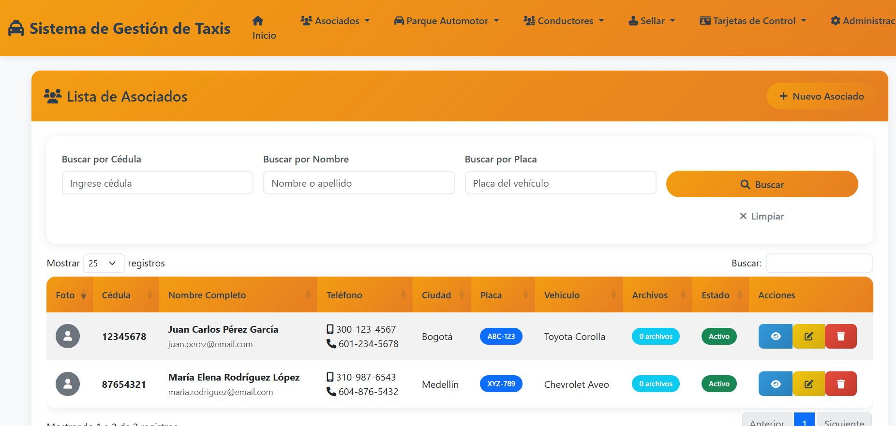

Proyectos Destacados
Soluciones que transforman procesos manuales en sistemas digitales eficientes
AsWorking - Sistema de Inventario y Ventas
Aplicativo completo para gestión de inventario y control de ventas de prendas de vestir. Automatiza el registro de productos, control de stock, generación de ventas y reportes analíticos.
Problema resuelto: Eliminó el control manual en Excel que generaba errores de inventario y pérdida de información de ventas.
 





Cotrasena - Gestión de Préstamos Cooperativa
Sistema integral para cooperativa de préstamos que gestiona toda la información crediticia, controla plazos de pago, genera recordatorios automáticos y calcula intereses.
Problema resuelto: Reemplazó hojas de cálculo descentralizadas que dificultaban el seguimiento de préstamos y sus estados de pago.
Gestión Ancianatos - Control de Residencias
Plataforma integral para la gestión de centros geriátricos que permite el registro completo de residentes, control de actividades diarias, seguimiento médico y gestión administrativa.
Problema resuelto: Digitalizó el registro físico en papel que dificultaba el acceso rápido a información crítica de los residentes.
Sistema Jurídico - Gestión de Procesos Legales
Aplicativo especializado para bufetes de abogados que gestiona procesos legales, demandas, tutelas, términos judiciales y genera recordatorios automáticos de vencimientos.
Problema resuelto: Eliminó el riesgo de perder términos judiciales que antes se controlaban manualmente en agendas físicas y Excel.
PEI - Seguimiento Instituciones Educativas
Plataforma gubernamental para hacer seguimiento y gestión de requerimientos y peticiones de instituciones educativas, facilitando la comunicación entre el gobierno y los centros educativos.
Problema resuelto: Centralizó la comunicación que antes se manejaba por correos y documentos físicos dispersos.
Súmale - Convenios Universitarios Estatales
Plataforma que permite a estudiantes postularse a convenios de universidades pagadas por el estado, gestionando todo el proceso de inscripción, validación, seguimiento y control de beneficiarios.
Problema resuelto: Automatizó el proceso de inscripción que se hacía manualmente con formularios físicos y validación en Excel.
 

SISBEN - Registro de Clasificación Socioeconómica
Sistema para la sisbenización de familias colombianas, permitiendo el registro completo de personas, sus hogares y núcleos familiares para determinar clasificación socioeconómica.
Problema resuelto: Digitalizó el proceso de encuestas físicas que generaban errores de transcripción y demoras en la clasificación.
 

Cooperativa de Taxis - Gestión Integral
Plataforma para cooperativa de taxis que gestiona conductores, vehículos, documentación, renovaciones de papeles y alertas de vencimientos para mantener la flota al día legalmente.
Problema resuelto: Eliminó el control en carpetas físicas que ocasionaba multas por documentos vencidos y desorganización administrativa.
Sistema de Fichas - Gestión Documental
Aplicativo para la gestión y control de fichas y documentación, permitiendo el registro organizado, búsqueda rápida y seguimiento de información importante.
Problema resuelto: Digitalizó archivos físicos que dificultaban la búsqueda y acceso a información histórica.